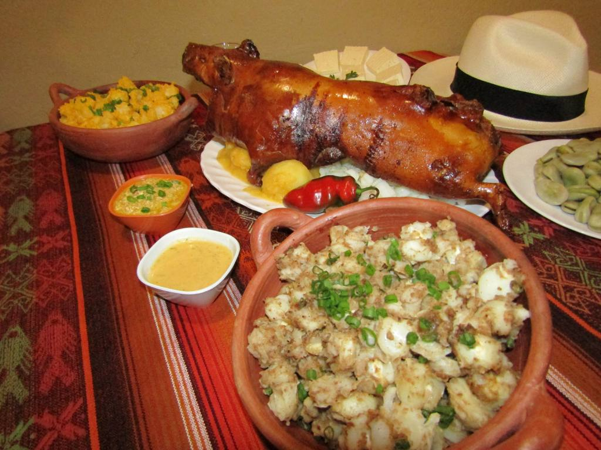

Chancho y Cuy

Cuando se habla de la gastronomia de Cuenca, lo primero que se nos viene a la mente
es el cuy; sin duda, uno de sus platos más recocidos. Junto con el chancho ambos
constituyen una parte importante de sus platos tradicionales.
El cuencano siempre ha encontrado la manera de darle un toque característico a sus
platos, es por ello también que también tienen un característico a la tradicional
fanesca, aquel plato de 12 ingredientes mayormente granos que se suele comer por
Semana Santa.
Chancho muerto
Es uno de los principales platos cuencanos, favoritos por locales y extranjeros consta de:
fritada, cascarita, sancocho y morcillas, acompañados de tostado y mote.
Cuy asado
El típico cuy asado acompañado por mote, papas o ensaladas.
Locro
Es una especie de crema de origen prehispánico; originario de varias partes de la sierra andina,
está hecho a base de maíz, papa y zapallo.
Mote-pata
Platos típicos cuencanos por excelencia. Se trata de una sopa espesa de maíz pelado, en caldo de carne de cerdo,
carne de cerdo, longaniza y tocino. Se le condimenta con semilla de sambo, tostada molida y preparada junto con
un refrito de cebollas y leche.